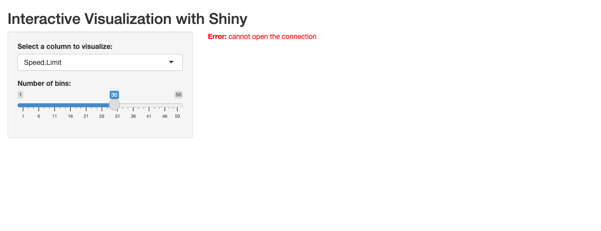

##| eval: false
##| standalone: true
#| echo: FALSE
##| viewerHeight: 640 # You will have to adjust this to fit everything
#library(shiny)
#library(tidyverse)
#options("readr.edition" = 1) # keep this to ensure you can download the data
# Define UI for app that draws a histogram ----
#ui <- fluidPage(
# App title ----
#titlePanel("Interactive Visualization with Shiny!"),
# Sidebar layout with input and output definitions ----
#verticalLayout(
# Input: Slider for the number of bins ----
#sliderInput(inputId = "bins",
#label = "Number of bins:",
#min = 1,
#max = 50,
#value = 30),
# Output: Histogram ----
# plotOutput(outputId = "distPlot")
# )
#)
# Define server logic required to draw a histogram ----
#server <- function(input, output) {
# The URL below has to point to a dataset on your github pages website
# I recommend creating a small-ish rds file that has only the data relevant to
# the interactive.
#data <- read_rds("https://sussmanbu.github.io/ma4615-final-project-quarto/dataset/loan_refusal_clean.rds")
#data <- read_rds(here::here("dataset", "cleaned_dataset.rds"))
# output$distPlot <- renderPlot({
#ggplot(data, aes(x = refusal_rate)) +
# geom_histogram(bins = input$bins + 1)
# })
#}
# Create Shiny app ----
#shinyApp(ui = ui, server = server)Road Real Talk: Crashes, Conditions, and Rescue
Potholes, cracks, and worn-out pavement—when we think about what causes traffic accidents, poor road conditions are often the first thing that comes to mind. But is the connection as straightforward as it seems?
To find out, we dug into the data to see how road quality, weather, and surface conditions shape the likelihood of accidents. What we found might surprise you. While pavement conditions do play a role, they’re far from the whole story.
What We Found: Road Quality Isn’t Everything Roads are rated by something called the Pavement Condition Index (PCI), which measures their quality on a scale from terrible to perfect. If bad roads mean more accidents, we should see a clear relationship between PCI and accident counts.
Instead? The connection is weak. A scatterplot with a trend line shows that while better roads slightly reduce accidents, the trend is subtle.
What does this mean? Road conditions alone don’t explain much. Other factors—like weather and what’s on the road surface—may matter even more.
When Weather and Wet Roads Take the Wheel Here’s where it gets interesting:
Wet surfaces (like roads after a storm) significantly increase accident counts. Rainy weather, on the other hand, seems to have the opposite effect—it actually reduces accidents. How does that make sense? It turns out drivers tend to slow down and be more careful when it’s raining, even though wet roads themselves are a major hazard.
A multivariate visualization brings this dynamic to life, showing how weather and surface conditions interact with PCI to impact accidents.
It’s Not a Straight Line: Complex Patterns in the Data When we examined the relationship between PCI and accidents further, a surprising pattern emerged. Instead of a simple straight-line relationship, we found a U-shaped trend.
This means accidents were more frequent at moderate PCI levels than at very high or very low PCI levels. Why? It’s hard to say for sure, but this might reflect how drivers behave or how other factors like traffic volume play a role.
Our polynomial regression plot captures this complexity and adds a new layer to the story: road conditions affect accidents in more complicated ways than we expected.
Get Behind the Wheel: Explore the Data Yourself Want to see these patterns for yourself? We’ve built an interactive dashboard where you can dig into the data.
Toggle between weather conditions to see how rain or wet roads impact accident trends. Compare the results of linear and nonlinear models to understand the bigger picture. It’s an easy way to explore what’s happening on our roads and what factors matter most.
The Big Takeaways Better Roads Help—But Not Much: While smoother pavement is linked to slightly fewer accidents, the effect is small. Weather and Wet Roads Matter More: Wet roads increase accidents, while rainy weather may make drivers more cautious. Complex Relationships: The U-shaped trend between PCI and accidents shows how other factors—like driver behavior or traffic flow—play a big role. What This Means for Safer Roads Our findings point to a broader truth: keeping roads safe takes more than just paving over potholes. It means targeting the biggest risks, like managing wet-road hazards and encouraging safer driving during bad weather.
By understanding these dynamics, we can make smarter decisions—whether that’s where to invest in road improvements or how to educate drivers about staying safe in tough conditions.
So, the next time you drive on a cracked road or slow down in the rain, remember: every condition tells a story. And with the right insights, we can make that story a little safer for everyone.
Interactive
You will also be required to make an interactive dashboard like this one.
Your Big Data page should also include a small interactive dashboard. The dashboard should be created either using Shinylive, as below. This interactive component should in some way support your thesis from your big picture page. Good interactives often provide both high-level understanding of the data while allowing a user to investigate specific scenarios, observations, subgroups, etc.
library(shiny)
library(ggplot2)
library(dplyr)
Attaching package: 'dplyr'The following objects are masked from 'package:stats':
filter, lagThe following objects are masked from 'package:base':
intersect, setdiff, setequal, unionlibrary(tidyverse)── Attaching core tidyverse packages ──────────────────────── tidyverse 2.0.0 ──
✔ forcats 1.0.0 ✔ stringr 1.5.1
✔ lubridate 1.9.3 ✔ tibble 3.2.1
✔ purrr 1.0.2 ✔ tidyr 1.3.1
✔ readr 2.1.5 ── Conflicts ────────────────────────────────────────── tidyverse_conflicts() ──
✖ dplyr::filter() masks stats::filter()
✖ dplyr::lag() masks stats::lag()
ℹ Use the conflicted package (<http://conflicted.r-lib.org/>) to force all conflicts to become errors#| eval: false
#| standalone: true
#| echo: FALSE
#| viewerHeight: 640 # You will have to adjust this to fit everything
options("readr.edition" = 1) # keep this to ensure you can download the data
# Define UI
ui <- fluidPage(
titlePanel("Interactive Visualization with Shiny"),
sidebarLayout(
sidebarPanel(
selectInput(
inputId = "column",
label = "Select a column to visualize:",
choices = c("Speed.Limit", "Surface.Condition", "Injury.Severity"),
selected = "Speed.Limit"
),
conditionalPanel(
condition = "input.column == 'Speed.Limit'",
sliderInput("bins", "Number of bins:", min = 1, max = 50, value = 30)
)
),
mainPanel(
plotOutput("plot")
)
)
)
# Define server logic
server <- function(input, output) {
data <- reactive({
# Replace this with your dataset loading logic
read_rds(here::here("dataset", "cleaned_dataset.rds")) %>%
mutate(
# Standardize Injury.Severity categories
Injury.Severity = case_when(
grepl("fatal", Injury.Severity, ignore.case = TRUE) ~ "Fatal Injury",
grepl("serious", Injury.Severity, ignore.case = TRUE) ~ "Serious Injury",
TRUE ~ Injury.Severity
)
)
})
output$plot <- renderPlot({
column_data <- data()[[input$column]]
if (is.numeric(column_data)) {
# Numeric column: render a histogram
ggplot(data(), aes_string(x = input$column)) +
geom_histogram(bins = input$bins, fill = "red", color = "white") +
theme_minimal() +
labs(title = paste("Distribution of", input$column))
} else {
# Categorical column: render a bar chart with improved x-axis
ggplot(data(), aes_string(x = input$column)) +
geom_bar(fill = "red", color = "white") +
theme_minimal() +
theme(
axis.text.x = element_text(angle = 45, hjust = 1) # Rotate x-axis labels
) +
labs(title = paste("Counts of", input$column))
}
})
}
# Run the app
shinyApp(ui = ui, server = server)
Listening on http://127.0.0.1:8988Warning in readRDS(con, refhook = refhook): cannot open file
'/private/var/folders/ns/_cr0srpd1v98_flffmvcgdhw0000gn/T/RtmptMuWqE/file76b57f1e66f9/dataset/cleaned_dataset.rds':
No such file or directoryWarning: Error in readRDS: cannot open the connection
Rubric: On this page
You will
- Title
- Your big picture page should have a creative/click-bait-y title/headline that provides a hint about your thesis.
- Clarity of Explanation
- You should have a clear thesis/goal for this page. What are you trying to show? Make sure that you explain your analysis in detail but don’t go into top much mathematics or statistics. The audience for this page is the general public (to the extent possible). Your thesis should be a statement, not a question.
- Each figure should be very polished and also not too complicated. There should be a clear interpretation of the figure so the figure has a clear purpose. Even something like a histogram can be difficult to interpret for non-experts.
- Creativity
- Do your best to make things interesting. Think of a story. Think of how each part of your analysis supports the previous part or provides a different perspective.
- Interactive component
- Quality and ease of use of the interactive components. Is it clear what can be explored using your interactive components? Does it enhance and reinforce your conclusions?
- This page should be self-contained.
Note: This page should have no code visible, i.e. use #| echo: FALSE.
Rubric: Other components
Video Recording
Make a video recording (probably using Zoom) demonstrating your interactive components. You should provide a quick explanation of your data and demonstrate some of the conclusions from your EDA. This video should be no longer than 4 minutes. Include a link to your video (and password if needed) in your README.md file on your Github repository. You are not required to provide a link on the website. This can be presented by any subset of the team members.
Rest of the Site
Finally, here are important things to keep in mind for the rest of the site.
The main title of your page is informative. Each post has an author/description/informative title. All lab required posts are present. Each page (including the home page) has a nice featured image associated with it. Your about page is up to date and clean. You have removed the generic posts from the initial site template.